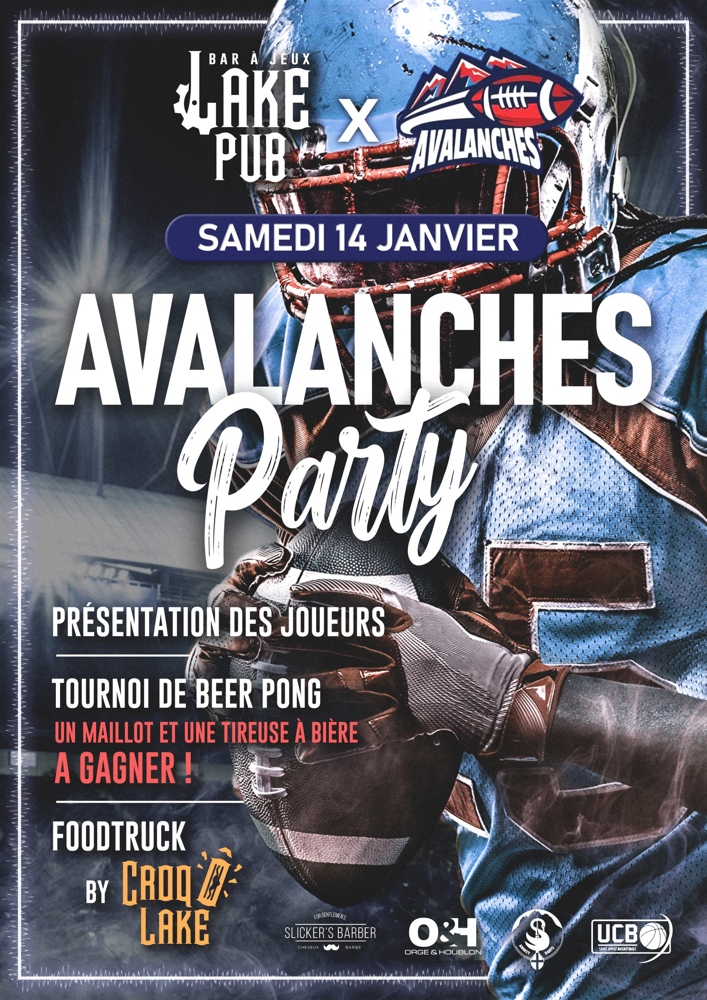
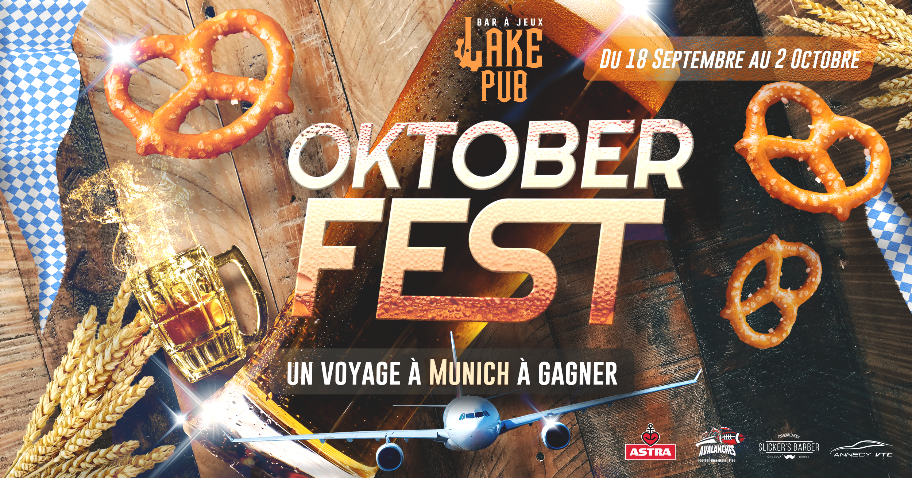
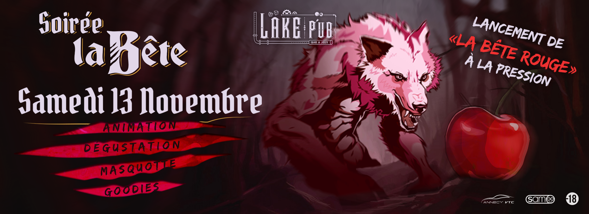
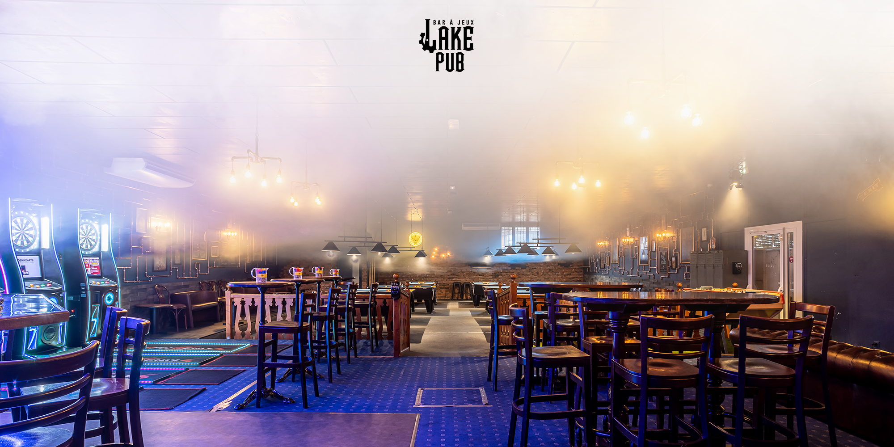
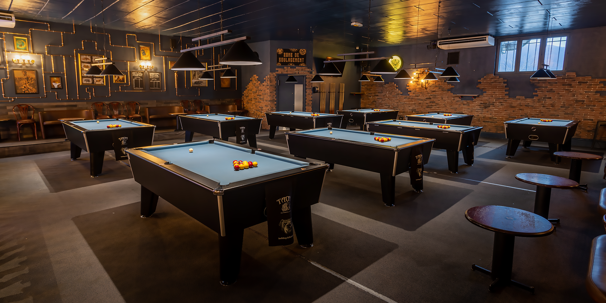
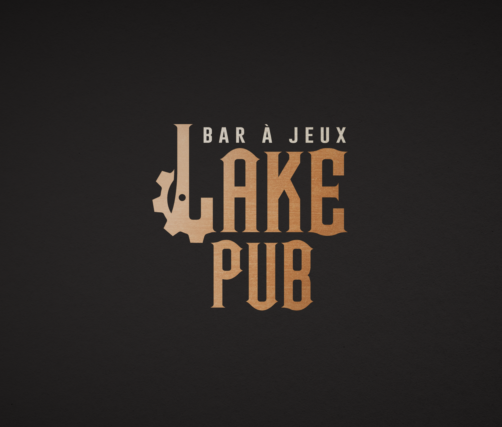
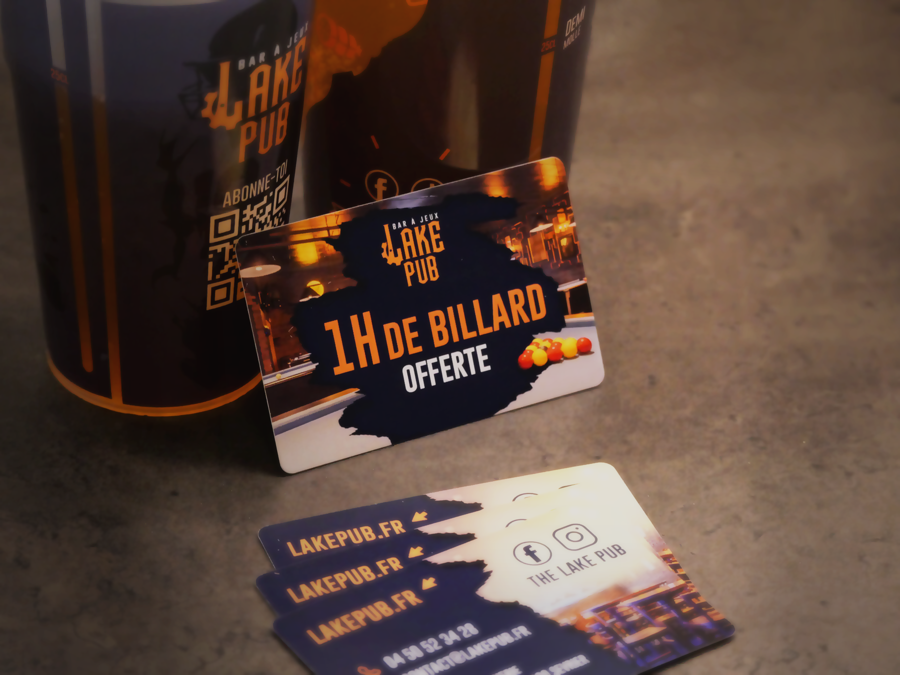
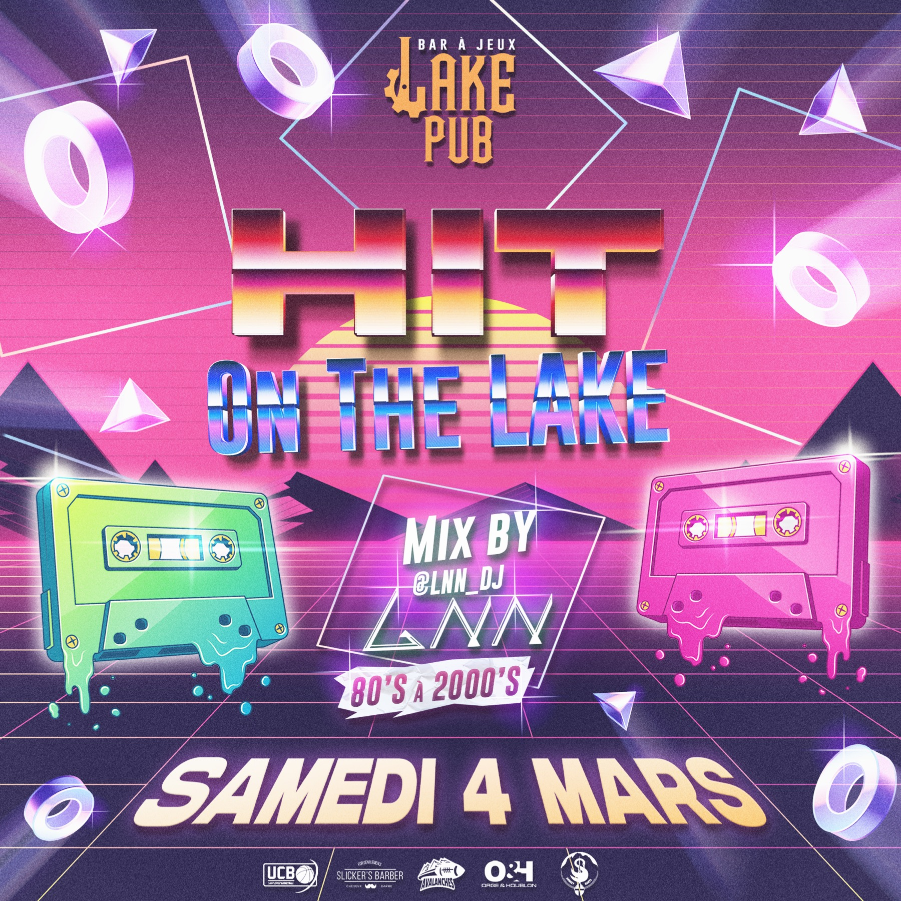
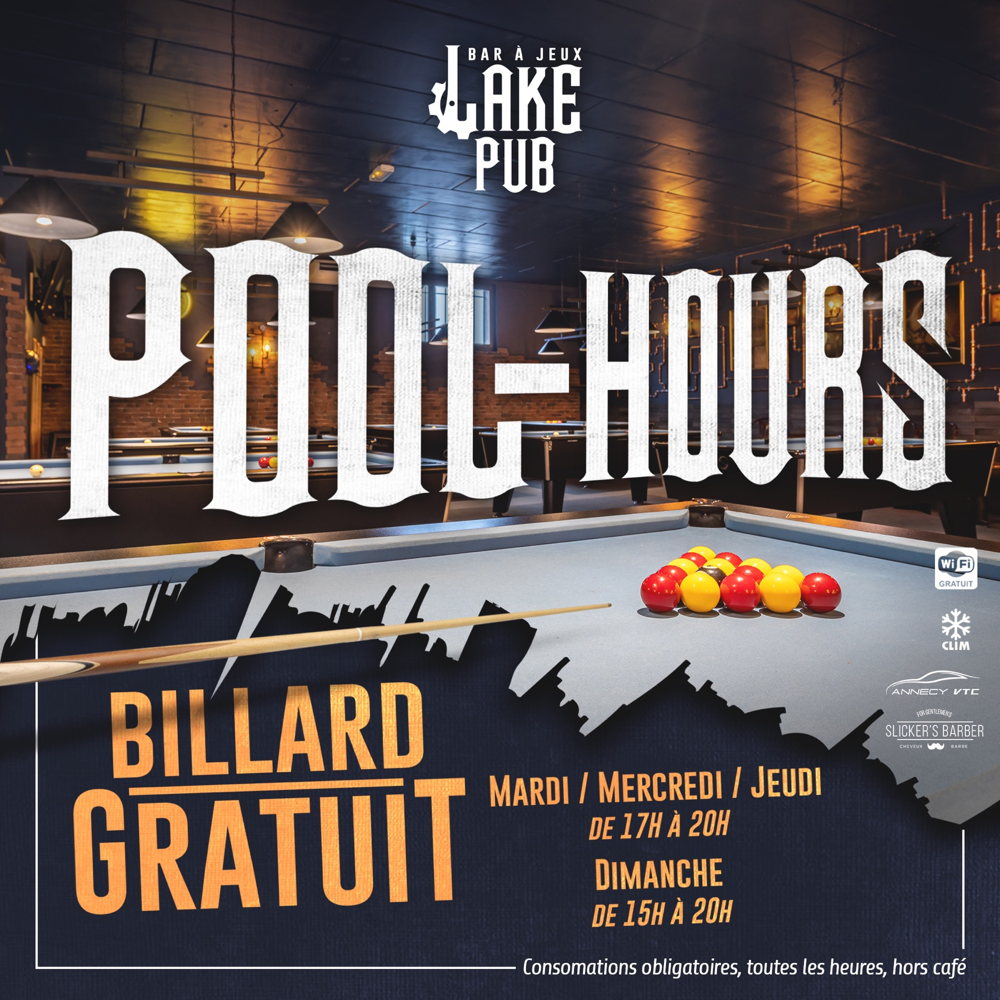

Refondre l'image d'un bar iconique tout en préservant son âme steampunk.
Le Lake Pub est un bar de 300 m² installé à Sévrier, en bord de lac d'Annecy. Créé en 2004, racheté en 2018, il est connu pour ses tables de billard, fléchettes, baby-foot et flipper — et pour une atmosphère steampunk affirmée.
Dans le cadre de mon apprentissage de deux ans, j'ai repris l'intégralité de l'image du bar. Le premier chantier : alléger le logo tout en conservant une identité forte et reconnaissable. Le travail s'est ensuite étendu à la décoration intérieure, aux affiches événementielles, au site web et à tous les supports de communication.
Chaque support a été pensé pour maintenir la cohérence de l'univers steampunk — entre typographies travaillées, textures métalliques et compositions éditoriales impactantes.







